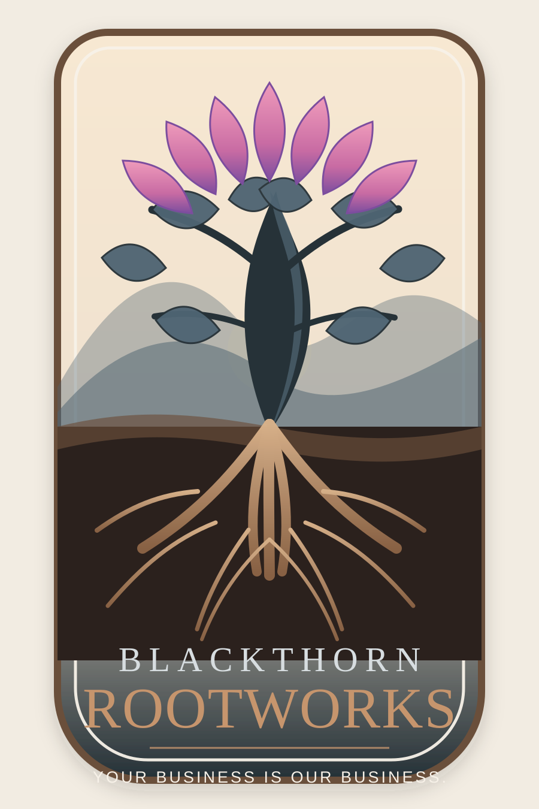

Startup Systems Audit
A practical review of your workflows, tools, documentation, risks, and operational weak points before they become expensive problems.

Blackthorn RootworksStartup systems consulting
Blackthorn Rootworks helps early-stage businesses build resilient foundations: strategy, workflows, documentation, technical structure, security awareness, and sustainable operating systems that can survive real-world growth.
Startups do not need corporate bureaucracy. They do need roots: clear systems, practical security, realistic operations, useful documentation, and decisions that do not become expensive later.
What we help with
A practical review of your workflows, tools, documentation, risks, and operational weak points before they become expensive problems.
Clean processes, decision records, onboarding notes, repeatable checklists, and internal documentation that people can actually use.
Plainspoken guidance on access, accounts, data handling, vendor risk, and security basics without enterprise-grade fearmongering.
Structure that reduces overwhelm: prioritization, sustainable cadence, communication boundaries, and realistic operating rhythms.
Our approach
Blackthorn Rootworks is built from lived experience inside large-scale IT and information security environments, translated into lean, human, startup-ready systems.
Build the roots before you chase the bloom.
Let’s build carefully
Reach out for startup systems consulting, workflow cleanup, documentation support, or early security foundation planning.